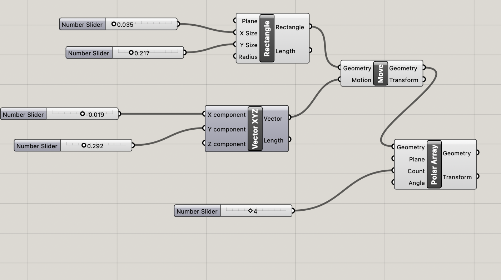
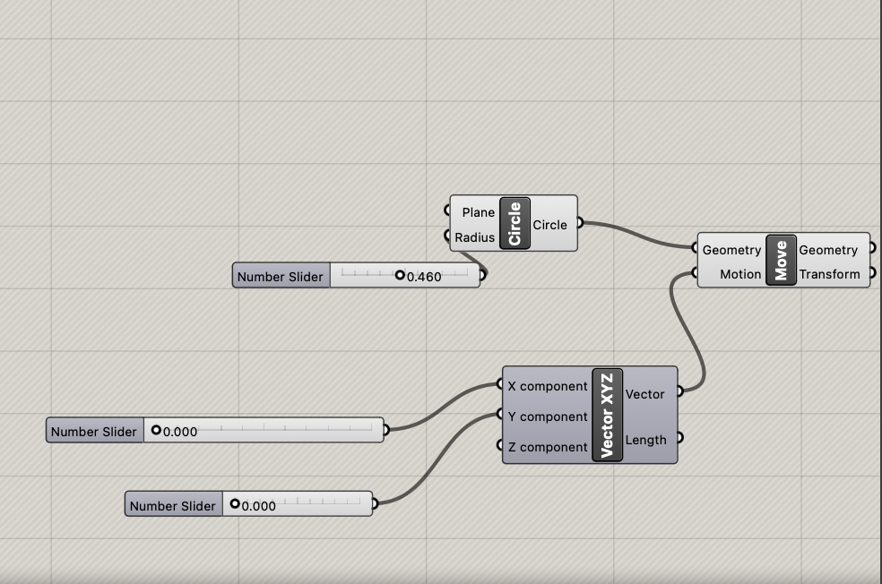
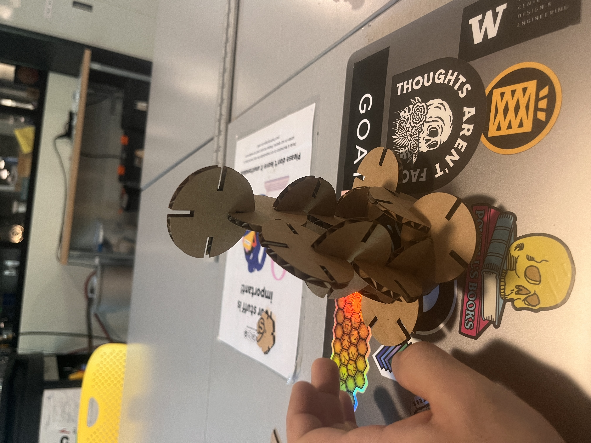
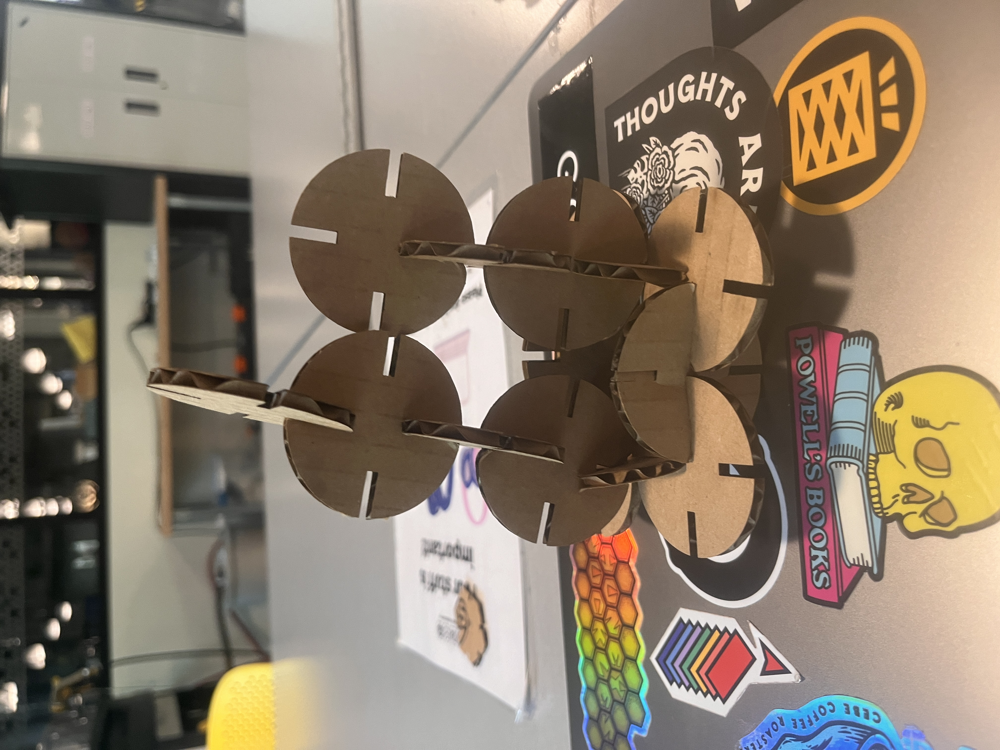

This section showcases the Grasshopper code used to create the parametric model. Notes within the code explain the input parameters and the baking process.
 The final constructed model is shown below. The pieces are clipped together as per the design.
 